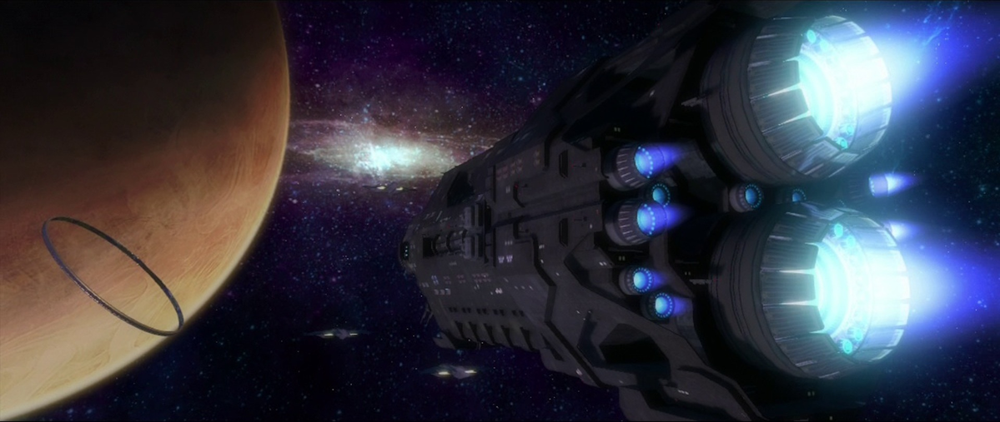
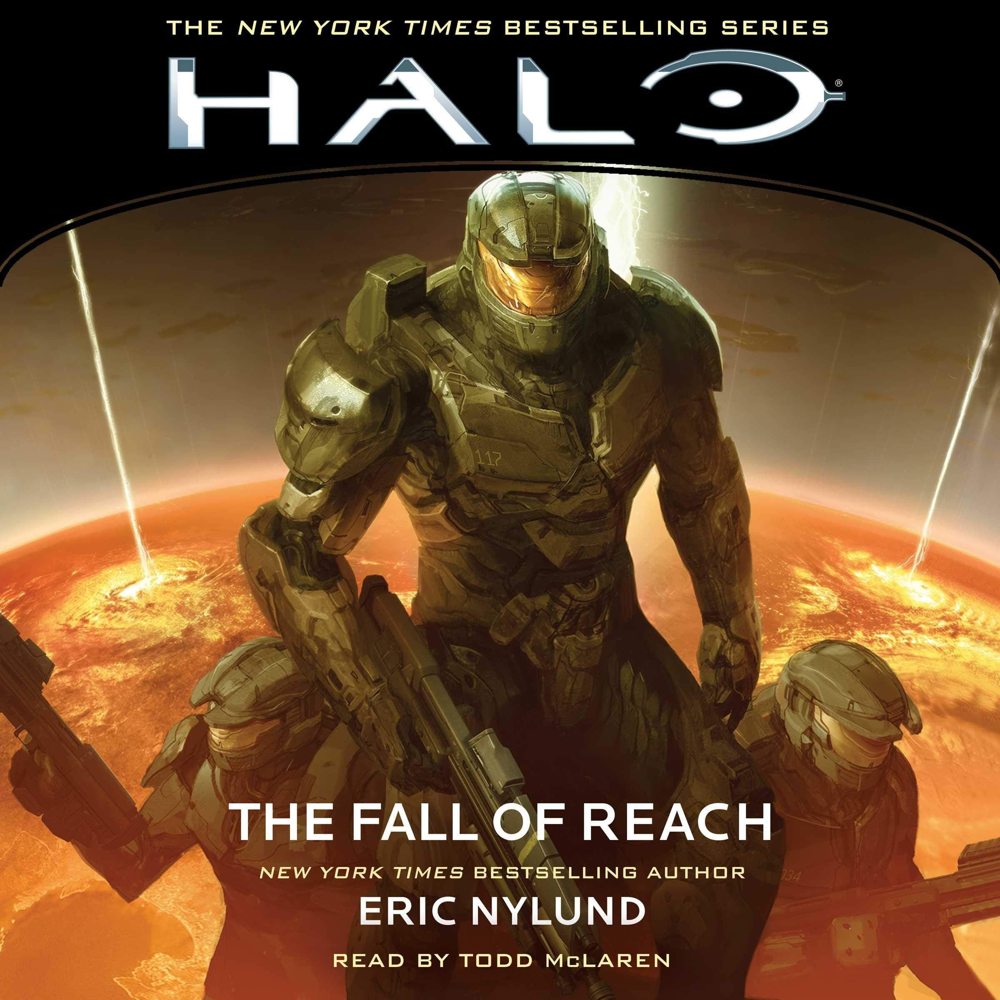

Halo: Combat Evolved established the foundation
When Halo: Combat Evolved was first released in 2001, it became a hit almost instantly. The game captured the hearts and minds of hardcore gamers and science fiction enthusiasts alike. While the game brought many innovations to the first person shooter genre, here we will only be talking about the story depicted in the games and books. From the game's humble beginnings to the incredibly expansive setting depicted by the books, we will be discussing it all.
As mentioned above, the foundations of Halo lore began with the game, Halo: Combat Evolved. The setting introduced there is one of desperation and perseverance. Throughout the entirety of the game, not much is known about the enemy, but one thing quickly becomes clear: humanity is at war, and they are losing.
The game begins with a naval spaceship, The Pillar of Autumn, coming into contact with a strange and inconceivable mega-structure, Halo. The entirety of Halo: Combat Evolved follows the Master Chief as he navigates several battles and attempts to solve the mystery of Halo.
Halo: The Fall of Reach widens the scope of the halo universe
It might come as a surprise to fans of the series, but the first novel in the series, Halo: The Fall of Reach, was actually released a couple weeks before Halo: Combat Evolved. The game set the stage and introduced the world to halo, and while it did a great job of placing our feet firmly on the artificial ground of the mega-structure, the books are what truly capture the scope of the halo universe. It wasn't until Halo: The Fall of Reach that we first hear about other planets such as Earth and Reach, where we really learn the extent to which humanity has expanded throughout the galaxy.
Its in this piece of media that we learn of the shady origins of the Spartan II project and why Master Chief is so capable. We get a glimpse of the affairs of humanity before they are unexpectedly thrown into a losing war with the alien conglomerate known as The Covenant. Halo: The Fall of Reach reveals that right up until the war with the covenant, humanity was in fact still waging war on itself even among the stars.
